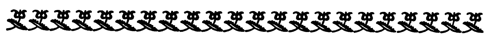

By
BEN HECHT
and MAXWELL BODENHEIM
AUTHORS OF
“The Love Affairs of Lesbia Lefkovitz,
The Studio Siren”
NEW YORK
BOAR’S HEAD BOOKS
1952
[Pg 1]
Copyright, 1952
by
BOAR’S HEAD BOOKS
PREFACE
by
Maxwell Bodenheim
[Pg 7]
In 1924 “Cutie” appeared in different issues of the Chicago Literary Times which Ben Hecht and I edited. We issued this paper in tabloid form, with streamers and scareheads; with poetry, prose and the other arts treated in a breezy, jovial, unassuming or unpretentiously serious way. If a creation was in our opinion exceedingly minor, we dismissed it quietly and avoided the poor joke of demolishing a small target with a broadside. We were never patronizing, dry, lofty, irascible or pontifical. Again, when creations were, quite frankly, meant to be only commercial or surfacely entertaining, we did not scoff at them for failing to be esthetic. In other words, we violated all of the sacred rules of the United Professional Highbrow Critics Union.
“Cutie”, on which we collaborated and which appeared in the Times, is a satire on[Pg 8] ultra-prudish hypocritical censors and assailers of sexual candor and incisiveness in literary and pictorial work—both official and amateur apostles of so-called cleanliness and righteousness, whose whitewash brushes directed against truthful exposures bear not the slightest resemblance to soap-laden wash-cloths which remove actual dirt from skin. After all, a fig leaf is ludicrously transparent and directs attention to the object which it is supposed to hide. Again, when you examine the much-debated quality of obscenity, it is—outside of vicious, abject crudeness—impossible to establish obscenity, beyond narrow individual preference opposed by relatively tolerant slants. The worn, one-or-two syllable words describing sexual organs and practices can be tagged as obscene, though “gruesomely stale and unnecessary” would be a more exact appellation. But otherwise obscenity is a moot question, and when censors attempt to jab their branding-irons on art of any kind, they are not cow-boys branding steers, but suppressive men fashioning would-be ugly effigies of elusive and sensitively outspoken works of art, and placing mean interpretations on the false figures. For[Pg 9] example, in the plot to remove my own novel, Replenishing Jessica, in the late twenties, the censor assigned filth and dirty lasciviousness to whimsically inoffensive lines such as: “Jessica reclined on the couch with Purrell, intimately but not perilously.”... “He tarried before the abode of her morals, but he made only a slight impression on the locks guarding the doorways.”... “As his fingers increased their bold explorations they suddenly ran into an ice floe and hastily withdrew.”
When playful, or sprightly, or oblique moues in words are pounced on by censors and labeled horribly lewd, then these censors must secretly be so afraid of the effect of sexual descriptions on their own glandular secretions that even the most moderate chuckle or eye-wink in print makes them shiver childishly.
“Cutie” is a barbed satire on this infinitesimal venom spurted at sexual verities. Herman Pupick, a prude with one glass eye and splintered pieces of glass in what passed for his heart, is forced to stagger in hilarious pursuits of Cutie herself, who represents an intelligent, involved, nicely belligerent pagan and hoyden, with a face so exquisitely[Pg 10] symmetrical, so magically, enticingly, softly, elasticly gleaming, that a paralyzed octogenarian would have jumped out of his wheel-chair in a miracle restoring him to youth. In the uproarious contretemps between Cutie and Pupick, she is seduced to an adultery of which his sourly blotched, equally self-holy wife is unaware. To Pupick, every tiny dalliance and eye-wink represents a dire sin, magnified by a blithe lack of repentance on the part of the minute transgressors.
This book appeared in the Early Twenties. At present the best way to indicate the piercing impudence of a Cutie toward the perennial Fraud of Pupick would be as follows: “Look, Pupick, a person isn’t taking up for adultery just because he admits that it exists and describes the motivations and reasons which make it happen in some cases. That is an accusation as silly as calling some one a lush-hound because he sat in a party of drunks and sympathized with some of the things which they said and did, even though he was sipping ... er, ginger ale. You’re sour cream, Pupick, and your mug would make a rotten cantaloupe apologize to the grocer trying to palm it[Pg 11] off on a customer for nine cents and a bus transfer. And as far as sexual details are concerned, rusty nuts and screws always have a yen against nuts and screws oily, polished and in perfect working order. You see, Pupick, a wolf who’s lost most of his claws and teeth ties on a pair of papier mache wings and claps a cardboard halo on his head and slowly and contentedly dies of starvation, but you, Pupick—you’re worse than the wolf. You insist that everybody should have all his teeth pulled out, because you’re a sanctimonious, buttery, pimply long-face. So take your frustrations to the nearest gin-mill (like you did when I pushed you into one on the North Side of Chicago) and pretend that you can chew just as well with your store bicuspids and molars as you did when you were still able to chew rawhide on a bet. Only wipe that cheesy smile off your puss when you try to pull the same camembert line in the next liquid-poison emporium.”
So long, folks, and be sure to read our strip tease of a censor-faker starting on the next page.
[Pg 13]

[Pg 14]
Introducing the Alligator’s Tonsils
[Pg 15]
Cutie was a shapely Mamma of twenty-one summers. Her bobbed hair looked like a bunch of yellow grapes. She offered an eyeful which would make a brass monkey run a temperature of 209 degrees.
When Cutie hit the boulevard on a breezy afternoon she left a row of asterisks in her wake.
After one look at our little Enemy of Sorrows, men were never the same. Forever after they kissed their wives and sweethearts with faraway eyes. No gent under 104 years of age was fit to pass the Board of Censorship for eight weeks after Cutie smiled on him.
Cutie gave St. Peter writer’s cramps before she was eighteen. After she was eighteen St. Peter crossed her name out of the Judgement Book. Not taking any chances, he also threw away her telephone number.
[Pg 16]
Nevertheless our little butterfly of passion was as evil to look at as a spring morning.
Where Cutie was born and how nobody knew. All that anybody knew about our little Blue Ribbon roadster was that she had the moth complex. Every night Cutie burned her wings off and every morning she grew them on again.
To be very brief, Cutie was the kind of a girl men forget, forty-nine years after their widows have collected the Insurance.
[Pg 17]
Introducing Little Casino and the Plugged Nickel
[Pg 19]
On her twenty-first birthday, this warm mamma met an over ripe quince who had been named Herman Pupick by his unfortunate parents. A word about Herman. Our hero was one of triplets. His father, Rudolph Pupick, a traveling salesman, rushed home from Milwaukee when he got the tidings.
After looking over the year’s crop, Mr. Pupick, Sr., said: “We’ll keep this one and drown the other two.” The one he kept was Herman. This was a mean break.
Our hero showed his disposition at an early age. He was a wet smack from the take off. When he was five months old he refused to nurse at his mother’s breast. He considered it immoral and obscene.
Before little Herman was nine years old, everybody knew he was the lily’s whiskers. He grew up to be one of those fireproof crepe hangers, who take orders only[Pg 20] from God, and he married an autumn leaf named Emmaline, suffering from virginity.
When he was thirty-five years old the only flesh pots Herman had ever seen were those his wife tended on the kitchen stove. He had been married ten years and every night before sliding into the hay he and the dementia praecox case who shared his headaches would kneel beside their thorny couch and request God to keep them pure. And He did.
Herman himself was so pure that he cancelled his subscription to the Presbyterian Weekly during the War owing to a headline which appeared in that racy organ on March 3, 1917. The headline read, “Naval Maneuvers Described by Eye Witness.” Our right hand of God considered this headline too suggestive for an organ intended for the home.
This pious dingelberry had only one eye. The other one was made of glass. It cost seven dollars and a half and was painted green.
The way our hero lost his gig was like this. On the seventh anniversary of his[Pg 21] wedding Herman brought home a quart of plain white ice cream.
“Tonight,” said Herman, “is the seventh anniversary of our joint fight against the Devil. It is, therefore, fitting that we should make merry.”
So they ate the ice cream, although Mrs. Pupick complained it gave her a headache. After this part of the bridal night had been relieved, Herman challenged his consort to a game of Tiddlywinks.
In the heat of this game, Mrs. Pupick snapped one of the tiddlywinks with unusual vigor, for marriage had not taken the fire out of her, and it flew into Herman’s lamp and put it out.
“God,” said our one-eyed Pilgrim, as he shelled out the seven and a half smackers for a new gig, “has smote me for my sins.” This was fair enough.
A few more words are necessary about Herman Pupick before launching into this great drama of sin and passion, to illustrate our hero’s ignorance of the world and its alleged humans. Herman thought that a brassiere was something to melt lead in; that[Pg 22] bloomers was a slang term which meant a series of mistakes; that torso was the name of a notorious Spanish bullfighter and that passion was what happened when a carpenter hit his thumb with a hammer.
What, you ask, did this big ham do for a living? Stand back, kind reader, control yourself. Herman Pupick was a reformer. He was employed by the United States of America for $29 a week to plug up all the pitfalls of the great city.
Yes, it was Herman’s duty whenever he saw something wicked to jump on it with both feet and crush it into the ground, and although our razzberry pedlar had only one eye he saw plenty that was low and vile.
In fact, to Herman the whole world was just one big House of Shame and everybody excepting himself and his wife and an adenoid sufferer named Rev. Gurglelurgel were all inmates.
Nearly everything Herman saw he figured out incited other people to sin. And this made him mad. Once when God smote our undertaker’s plume with a severe attack of constipation he wrote a burning letter to[Pg 23] the Voice of the People in the Tribune denouncing the immorality and obscenity of public toilets.
It was the same way with Madam Pupick. When Madam got all dressed up and ready to go to prayer meeting and tell God what she thought of herself, she looked as if she had forgotten to remove the Boncilla mud pack.
We will now leave this sweet minded team and leap into the maelstrom of tragedy and passion which fate was even then weaving on its maelstrom-loom.
[Pg 25]
In which the Devil Kicks Herman Pupick in the Pants
[Pg 27]
Herman Pupick first met Cutie on the corner of State and Madison streets. Our little home wrecker had slipped and fallen and a large crowd of first nighters had gathered to watch Officer Murphy, the traffic dictator, extract a splinter out of Cutie’s knee.
At this point Herman’s one good eye bulged out of his head like a ripe mushroom. One peek at Cutie’s injured fox trotter filled him with a nameless rage.
“How dare you!” he cried, addressing Officer Murphy. “How dare you take advantage of this maiden’s mishap and expose her person to the lewd eyes of this crowd? Unhand her!”
Officer Murphy dropped the hem of Cutie’s dress and a great sigh went up from the cock-eyed multitude.
“Come with me,” Herman spoke, a ring of authority in his voice, and seizing[Pg 28] Cutie’s arm he escorted her to the new Methodist Book Store in the Temple Building, for our hero was a great reader.
“Now,” said Herman, mopping his brow, “you are safe. Be not afraid.”
“Say, bozo,” Cutie said, handing him an O. O., which would have discouraged Former Attorney General Daugherty, “what kind of a racket is this? I am just an honest little kiddie trying to get along.”
From which it can be seen that our heroine thought it was a pinch.
Still trembling with rage, Herman handed her one of his blackmailing cards.
“Here,” he said, “is my name and vocation.”
“Oh, Herman Pupick, Censor and Reformer,” Cutie read out loud. “My Gawd, the Arsenic Kid. Oh, Papa’s lost his teeth. Send for the monkey gland wagon. So you are a reformer?”
“Yes,” said Herman.
“What kind of reforming do you specialize in?” continued Cutie. “Maybe I can be a great help to you.”
[Pg 29]
“Sin,” answered Herman, “any kind of sin. Wherever I find things which incite to lewdness and debauchery, there my duty lies.”
“Amen, brother, mine too,” cried Cutie. And lifting up her dress she eyed her knee with concern. “I take it,” she murmured, “that splinters are not in your line.”
Herman Pupick closed his glass eye. For a moment he stood his ground. Then he fainted.
“Where am I?” he muttered five minutes later when his stricken senses returned.
“I’ll bite, where are you?” echoed Cutie. “When last seen you were counting moth balls in a Swedish restaurant.”
“Ah, it all comes back to me now,” gurgled our woozy smut hound. “God drew a veil before my eyes to shut out that evil spectacle.”
And lifting his fanny off the floor Herman pointed his forefinger at our heroine.
“You spawn of Hell,” he cried, “you painted Jezebel, don’t try to work your sinful[Pg 30] wiles on me. I know you for what you are, a cigarette smoking, rum guzzling creature of the underworld. Begone to your devil’s lair. You soul wrecker luring innocent men to their doom with your corruptions.”
“Say,” Cutie broke in, “you poor kidney-footed clown, you one-eyed leftover, how do you get that way? What Lost Manhood advertisement have you been reading? Go on, get back into your manhole before some enterprising undertaker lays a lamp on you.”
“Me trying to lure you,” Cutie continued, having taken a fresh breath. “I would just as soon get amorous with a blue-nosed Mandril. A gimp like you takes my appetite away for a week. Come on, beat it, poison ivy, before I start calling you any hard names.”
At this point, Herman Pupick turned on his heel and walked out of the bookstore, leaving his vis-a-vis flat.
But when our hero reached his dove cote that evening, he felt strangely disturbed.
“Emmaline,” he said to his fellow sufferer,[Pg 31] “have you ever had a splinter in your knee?”
“Herman! How dare you!” cried Mrs. Pupick, blushing violently. “Do you think that sort of talk is fit for the home?”
“No,” said Herman, a wave of shame covering him like a pail of dishwater. An hour later Herman and the dementia praecox case were kneeling beside their sleeping bags requesting God all over again to keep them pure.
But Herman couldn’t sleep. Every ten minutes he would wake up and say “Splinters.” Finally our hero, first crossing himself three times, peeled back the bed covers from his sleeping consort. Madam Pupick was partial to the kind of night shirts they bury sailors in who have died at sea.
For a moment Herman was almost discouraged. But a strange impulse had mastered him. Gingerly he lifted up the night dress until he had exposed Madam Pupick’s knee. At this point, the kippered herring at his side opened one of its glims and sensing danger, let out a terrible squawk.
“Herman! What are you doing,” she shrieked.
[Pg 32]
“I dreamed you had a splinter in your knee,” Herman mumbled with a guilty start, “and I was going to take it out.”
Madam Pupick stared at him with watery eyes and yanked the bed covers into their proper position. She was a daughter of Eve, but her father was a mackerel.
Thus was the first thread woven in the maelstrom of passion which was to trip our hero and singe his wings. For all that night he tossed on his bed like a Mexican jumping bean.
He dreamed he was kneeling before a beautiful window and watching a windmill made of splinters turning around outside and on top of the windmill was a large snake. Then slowly in his dream the windmill and the snake did a fadeout and he found himself looking at Cutie’s knee just as he had seen it in the Methodist Book Store.
In the middle of the night Herman woke up with a yell. He had kicked all the covers off and was standing in the middle of the bedroom. As his senses returned our hero felt that something had happened. And he remembered all of a sudden that he had forgotten his hat in the book store.
[Pg 33]
Falling to his knees, Herman put the tips of his fingers together and, his eyes rolling, raised his voice in a grim unfaltering song.
“Onward Christian soldiers, Marching as to War....
With the Cross of Jesus——”
And at just this moment in another part of the great city Cutie with vine leaves in her hair was gathering asphodels in the groves of Kypris while the cuckoo clock on the rubber mantlepiece struck three and the ukeleles danced in the wind.
[Pg 35]
In which Our Hero Becomes an Open Book
[Pg 37]
Herman Pupick wrestled with the Devil for three weeks and lost two straight falls. It was no use. Our hero’s pure mind was a total wreck.
In vain Herman asked God to help him out. Whenever he closed his one eye to receive the divine message all he saw was Cutie’s right leg. Satan had marked our crepe hanger for his own.
“There is something wrong with me,” groaned our hero, making it unanimous. “I will have to go and see a doctor.”
This was how it happened that Herman came panting into the offices of Dr. Kukuheimer, the noted dirt digger who had got rich off the complex-boom. Herman’s tongue was hanging out like a slice of watermelon.
The dizzy medicine man took one look at this bottle of sour cream and patted the marcel in his Van Dyke.
[Pg 38]
“I will first take the history of your case,” he warned. “Tell me your name, business and favorite dreams.”
Herman stuck out his tissue paper chest and announced who and what he was, from one point of view.
“I am,” spoke our hero, “Herman Pupick, censor and reformer. I am employed by the United States government to fight sin wherever I see it. My specialty is suppressing lewd and obscene books.”
“Can you read?” inquired Dr. Kukuheimer quickly.
“Well,” said our hero proudly, “I know all the dirty words.”
“Now tell me,” the eagle-brained scientist pursued, “what your symptoms are?”
“I can’t figure it out,” Herman answered. “I get hot and cold sweats, ringing in the ear and at night I keep imagining things.”
“What sort of things?” inquired the doctor.
Herman hung his head like a dead herring.
[Pg 39]
“I would rather not say,” he answered, biting his necktie.
“Oh, them kind of things,” Dr. Kukuheimer frowned. “Well, we will have to give you the pinochele test.”
The great soul diver pulled down all the window blinds and took out his magic lantern.
“I will show you some pictures,” he announced, “and take down your reactions.”
The first picture thrown on the screen was that of Queen Alexandria. Her Nibs was a regal-looking broad. Herman squirmed in his chair like a plate full of fresh noodles.
The second picture was Julian Eltinge in he-man’s clothes. Our hero caught his breath and blushed like a piece of liver sausage.
“Don’t,” he lisped.
Dr. Kukuheimer marked down the reactions with his pencil and switched on a picture of Baby Peggy. Herman began to heave.
“I didn’t come to see a movie show,” he[Pg 40] gurgled. “Movies are lewd and obscene. Take it away.”
Dr. Kukuheimer turned on a slide showing the ruins of Pompeii. Our hero was now breathing like the winner of a fat woman’s race. Without giving him a chance to recover, Dr. Kukuheimer flashed a life sized chromo of Annette Kellerman.
Herman took one look at the fancy curves and jumped to his feet with a yell. Tearing his hair, our hero began running around the room and falling over desks.
“Take her away,” he screamed, “I can’t stand such vile sights.”
But Dr. Kukuheimer only smiled and threw a picture of Gilda Grey on the screen. Gilda was doing her Hawaiian split and wearing a small-sized doormat with the word Welcome on it.
This was too much for our hero. After pulling wildly at his hair he let out a deep groan and collapsed into the wastebasket. Dr. Kukuheimer revived him with an ice pick.
“Oh, God!” murmured Herman, “was there anybody saved?”
“Sit up and I will tell you what’s the[Pg 41] matter with you,” answered Dr. Kukuheimer. “You are among friends.”
Herman sneaked a look at the empty screen, and sighed.
“Yes,” spoke the doctor, “you are in a bad way. You have all the complexes. A wonderful case. My record shows you have a highly developed Oedipus Rex Complex, a homosexual complex and a distinct touch of necrophilia. You are also suffering from a pronounced masochistic neurosis with catamite tendencies, and it is obvious that you are a pathologic fetichist with malignant satyriasis compulsions.”
Our hero, when he heard this, broke down and wept like a school boy.
“What do you advise, doctor?” he gulped.
“Well,” Dr. Kukuheimer answered, “I would suggest that you shoot yourself. The sooner the better.”
Herman handed the clever man twenty-five charlies and staggered off the premises like a one-legged turtle.
[Pg 43]
In which Cutie Steps On the Gas
[Pg 45]
Cutie, our little warm mamma, was decorating the flesh-pots this happy evening. Two lounge serpents named Morris and Bartlett had taken her to the Rainbo Gardens where there was a snake dance going on.
At ten o’clock Morris had taken the count and Bartlett was sitting with his dogs hanging out of the window to cool. Cutie, however, was still in the ring.
Our little twelve-cylinder butterfly had attracted a great deal of attention. As a dancer Cutie had Ruth St. Denis looking like a matzos peddler. St. Vitus himself would have copped fourth prize as a study in still life alongside of her. Nothing but a slow motion camera could do Cutie justice when she let her manners slip.
Among the side line sheiks who were K. Oing our quicksilver stepper was Herman Pupick, the celebrated censor and reformer. Herman was in disguise. He was[Pg 46] wearing a large black mustache and a pair of green spats. From a short distance Herman looked like a laboratory specimen playing hookey.
Our hero had sneaked into the Garden in answer to the call of duty. Since his visit to Dr. Kukuheimer he had been working over-time censoring and reforming in a mad effort to put Cutie out of his mind.
While this Nature’s Blunder was taking notes on the low stuff happening before his one eye, he suddenly let out a stifled squawk. Cutie herself had sailed past him.
At first Herman thought it was all a dream. He pinched himself to see if he was awake. But he was dead from the neck both ways so it didn’t count. In the meantime, Cutie had discovered our hero. She penetrated his disguise at a glance. You can hide a light under a bushel but it is much harder for a pole-cat to conceal himself.
“My Gawd!” cried Cutie, turning in her tracks, “If it ain’t nature’s little nobleman, Mr. Pupick.”
Herman rose with the dignity of a lumbago victim.
“How do you do?” he replied in a hushed voice and held out his fin. Our[Pg 47] heroine shook it and for a minute she thought somebody had slipped her a dead eel.
“I am grieved,” spoke Herman, “to see you pursuing your sinful course in this manner. I had hoped that our last meeting would cause you to see the error of your ways.”
“Why the shredded wheat over the kisser?” inquired our heroine eyeing the false mustache. “Take ’em off, poison ivy, before somebody throws you into a tank with the rest of the walruses.”
Our hero felt a little dizzy but his duty remained plain.
“It would give me great pleasure,” he said, “to take you out of this place and bring you home to your parents.”
Cutie felt a sudden curiosity.
“Come on, Mr. Pupick,” she invited him, “let’s crawl.”
Herman found himself oozing out of his chair. He was in a trance. He made a last effort and tried to steady himself by thinking of Mrs. Pupick. But all he could remember about her was that her knees looked like a couple of pineapples.
[Pg 48]
Our hero crossed his good eye and let himself go. The music was raising hell with his complexes. When Cutie put her arms around him she thought she had grabbed hold of a sack of cement.
“You are making a mistake,” our heroine grunted, “the idea is that we are going to have a dance, not a tug of war.”
But Herman was beyond the power of reason. As his smeller leaned against Cutie’s corn colored hair, he let out one gasp and swallowed his false mustache. When he felt our little mamma’s shimmy begin to shake, Herman thought a bolt of lightning was playing a tattoo on him. For a few minutes this flat wheeled caboose of gloom couldn’t figure out which part of him was his feet.
“What’s the matter?” Cutie whispered, “you are behaving like a clam diver with the hiccoughs. Have you lost control?”
Herman didn’t know exactly what was being said. He had grown so hot that his glass eye was beginning to melt around the edges. Just then the management turned the lights down and everything became green.
[Pg 49]
“Oh, God,” our hero groaned. And then all he knew was that somebody had tied him to a pin wheel as big as a barn door and set a match to it. He was going good at the rate of seven hundred revolutions to the second when somebody else shoved a bomb down his throat and he blew up.
[Pg 51]
In which Herman Pupick Skids off the Straight and Narrow
[Pg 53]
When Herman recovered what a practical joker would call his senses he found himself in a taxi cab. He felt something was terribly wrong. Opening his glim he saw Cutie. She was wiping his face with a sponge.
“Where am I?” murmured our hero.
“You are safe for the time being,” Cutie answered, “if the posse don’t locate our tracks.”
Herman shuddered and realized that he was covered with blood. He looked like a tomato somebody had thrown away.
“What has happened?” he groaned.
“Plenty,” our little first aid replied. “You are certainly a rough worker. Where was you raised, in a spittoon? It is too bad you left your pick at home on the mantlepiece, or you might have been more successful in your love making.”
“Love making,” moaned Herman. “Oh, my God, what have I done?”
[Pg 54]
“Yes,” continued Cutie, “we are dancing pretty when all of a sudden right in front of everybody you let out a terrible yell and fasten your horse teeth in my ear. Then, before I can get a good hold, you pull a half nelson on me and I am down for the count when the bouncers step in. One of them whams you on the skull with a near beer bottle and the other does a buck and wing on your neck. But little Herman, the Boy Scout, won’t give up. All you do is sink your teeth in my shoulder and make noises like a basket full of hungry pooches. Well, they finally tore you from my clutches after the riot call had been sent in and they had you stretched out on the curbing waiting for the booby wagon when this taxi creeps into sight and I shove you in and here we are, fleeing the angry posse which is threatening to dip you in oil and set fire to you without further argument.”
When Herman Pupick heard this he grabbed hold of his head and moaned like a lost soul.
“Where are we going?” he asked.
“Well,” said Cutie, “we will stop first at my little love nest and lay up for a few[Pg 55] repairs. You look as if you had just escaped from a lunatic asylum full of Swiss bell ringers. After we have restored some of your face and removed the rest of it we will make plans for the future.”
A half hour later Herman was lying on a couch in a room that smelled like the eau de cologne department of Marshall Field’s. Our heroine had bandaged him up till he looked like a second hand patch work quilt.
Herman was just about to thank her when he happened to look at the table next to him. On that table in plain view were all the books he had suppressed in the last ten years.
This terrible sight restored our hero to himself. Staggering to his feet he let out the famous Pupick war cry and fell upon the dreadful volumes.
“How dare you?” he cried, “fill your home with such lewd and obscene books as these? Don’t you know they are corrupt and dangerous influences? No young girl should be allowed to handle them.”
Wounded though he was, our hero seized the literature which his pure soul[Pg 56] found so offensive and tore it into shreds. When he got through, the room looked as if a nanny goat had been sleeping in it.
Just as our bruised and battered killjoy had finished his job, Cutie appeared in the doorway. She was a little overdressed for a Ziegfield chorus, but nobody in their right mind would have barred her out of a school for the blind. She was holding a pair of large lavender pajamas with fancy buttons on the jacket, in her hand. When she saw the room full of torn paper she came to a full stop and sighed.
“My Gawd,” she muttered, “he’s gone cuckoo again. Say,” she said aloud, “come out of it, Ophelia. You have had a large evening and there’s no use trying to stage an encore at this hour. Here, I think this sleeping bag will just fit you.”
And our little life restorer held up the lavender pajamas.
Herman Pupick stood with his one eye riveted on his hostess as if she were the chariot scene from Ben Hur.
[Pg 57]
In which Herman Pupick Makes a Convert
[Pg 59]
When Herman Pupick, the celebrated censor and reformer came to life the next morning, he was dressed in a pair of silk lavender pajamas. Even so, he looked like a cross between a chop suey pedlar and the inside of an Odd Fellow’s coffin.
“Good morning,” said Cutie, as our hero opened his one good eye to this unaccustomed sight at the foot of his haystack. For Cutie, risen from the morning tub, crowded her two hundred dollar kimona like a freshly inflated brand new inner tube.
“My Gawd,” continued our heroine, after a long look at the piece of rat bait occupying the company couch, “I forgot all about you being out here. I must have got my dates mixed. You are Mr. Pupick, the celebrated censor and reformer, if I remember right.”
“Yes,” moaned Herman, “but I must have met with an accident.”
[Pg 60]
“All right,” said Cutie, “you can use the bathroom.”
Ten minutes later, our hero came bounding out and stood jumping up and down in the middle of the room.
“I have received a message,” he gurgled, “from on High. It is a plan to rid the country of all lewd and obscene literature overnight.”
Throwing himself on the floor in front of Cutie, our hero sunk his false teeth into her ankle and barked for more.
“You are my inspiration,” Herman cried. “Until you came into my life, I was only an ordinary censor and reformer. Now I feel new vigor in my veins. I feel strong enough to stamp out the entire sins of our age.”
Cutie reached for a crowbar which was standing on the mantlepiece and as she did so her kimona carried the ball for ten yards around the left end. Herman couldn’t restrain himself and raised his voice in song.
“When Jesus shows his shining face there is sunshine in my soul,” our hero chanted.
[Pg 61]
“Stand up, poison ivy,” Cutie interrupted, kicking him under the chin, “and if you try to bite me once more I will play taps on your skull with this crowbar. I won’t stand for your making love to me unless you use a pair of iceman’s tongs and a mask. You are a very rough man, Herman, besides which you have a face which in its happiest moments reminds me of a cow pasture, it being so full of places I can’t look.”
“Oh, my dear young woman,” our hero moaned, “you have failed to understand me. You are my inspiration for higher things. You do not know how lewd and wicked is the world. How dangerous it is for little children to grow up surrounded by lewd and obscene literature.”
Herman’s potato head fell despairingly on Cutie’s knee.
“Debauchery is everywhere,” our hero groaned. “I cannot sleep nights thinking of all the evil there is and of the things I have left undone.”
Cutie felt a pang of conscience. Emboldened by her silence, Herman’s noble heart grew warm. He reached one of his fins for her ribs and declaimed passionately:
[Pg 62]
“Think, think, my dear fellow worker. Everywhere you turn, what do you see? Books which corrupt the morals of the young. Plays which stir young men and women to depravities. We will put an end to it. Don’t you understand? God has sent you to me. I have plucked you from the fire.”
Our little burning brand felt a great white light open in her soul.
“Ouch,” she murmured, “don’t pinch me so hard. I understand. I have led a sinful life, reading books unfit for children.”
“Yes, yes,” panted our hero, “your wickedness is plain to you now. Repent! Repent!”
“No,” Cutie murmured.
Herman threw his arms around her, his face shining with piety like a Christmas tree. Burying his nose in her collarbone, he began to squeal like a peanut wagon.
“We will burn down all the bookstores,” he cried, “and blow up all the publishing houses and public libraries and arrest everybody. Everybody,” he repeated. “Repent, sister, repent! Think of the little kiddies whose lives we will purify.”
[Pg 63]
Cutie burst into tears.
“Let me go,” she sobbed. “I am unfit for the great work.”
Herman lifted her to her feet. A moment later, Len Small was elected governor by a large majority of one hundred thousand votes. Although this gesture on the part of the proletariat argued that a Republican landslide had started, the commander in chief of the navy, a bald headed man with a wen on his right thumb, refused permission to the transcontinental aviators to stop over in Madrid. The results of this action are too well known for further comment. Herman Pupick was defeated for congress on the fifth ballot and the commonwealth of Illinois had lost another able defender.
[Pg 65]
In which Mrs. Pupick Makes the Front Page
[Pg 67]
The days passed rapidly and the nights had no flies on them either. The whole world was beginning to talk about Herman Pupick.
Until Cutie had come into this crepe hanger’s life, Herman had been only a cold and plodding censor. But after spending a week in our warm mamma’s bungalow discussing ways and means to throw the hooks into the Devil, Herman was a changed man.
He closed up all the dance halls by writing letters to the papers and caused the arrest of twenty-nine authors in Schlogl’s restaurant, suppressed the Chicago Literary Times, wiped out all the bookleggers, and had all the abdominal belt displays taken out of all the drug store windows.
There was even some talk of his running for President on the Smut Hounds’ ticket. But Herman wouldn’t listen to this.
“The government is paying me $29 a week to clean up the nation,” said our hero[Pg 68] simply, taking Cutie in his arms one evening, “and I can do more good where I am.”
Mrs. Pupick didn’t read the newspapers because she had no interest in rape. When Herman failed to report for his farina the first morning, Mrs. Pupick was worried. She feared he might have been run over by a kiddie car.
All that day she sat and waited. At night she prayed and sang hymns. But it did no good. So at dawn she telephoned her neighbor’s husband who was a dog catcher for a Greek restaurant and asked him if he had seen our hero.
When he said he hadn’t seen Herman for two days, Mrs. Pupick put on her Sunday wig and sat in front of the parlor window.
On the ninth day this onion sack was rewarded for her vigil. Looking out of the window, she saw her missing link parading down the street with three dizzy broads hanging on his arms. “The Lord have mercy on my poor soul,” gulped Mrs. Pupick, and fell to the floor with a crash.
When she opened her eyes, Herman was bending over her. He had unbuttoned her[Pg 69] cast iron shirt waist to give her air. Mrs. Pupick pulled the rug over her in confusion and sat up.
“Where have you been?” she demanded.
Our hero breathed with relief.
“Thank God you are alive!” he lied like a dog. “I have been busy censoring and reforming, my dear. I want you to meet my assistants.”
Taking a fire gong out of his pocket Herman smote it with a monkey wrench. Three vampires leaped out of the kitchen in response. One of them was Cutie, the other two were her sisters in God.
“Meet my staff,” Herman spoke up. “Staff, this is Mrs. Pupick.”
“Hot baby!” cried Cutie, “you don’t mean that you are married and that this bag of prunes is the wife?”
“Yes,” said Herman frankly. “Be kind to her, for she will be a great help to us in our work.”
Cutie’s two friends poked their fingers in Mrs. Pupick’s stomach to see if she was real.
[Pg 70]
“You vile wretch,” our warm mamma cut loose, “so this is the way you have been deceiving me! Getting me to repent and repent and all the time with a ball and chain waiting for you at home.”
Mrs. Pupick staggered to her feet and grabbed a hat pin off the dresser. Before anybody could sandbag her she had run the hat pin into Cutie’s left chest. Our heroine let out a moan and fell on the bed just as two newspaper reporters and a press photographer were ringing the door bell.
[Pg 71]
[Pg 72]
[Pg 73]
There are three graves out in Rosehill Cemetery. Bring your sponge along while we give them the once-over. Over the first grave is a $500.00 tombstone donated by Charlie Blake and it says on the tombstone:
“Here lies Herman Pupick, glass eye and all. He was a mush head and a wet smack. When he died, his many admirers presented him with a drainpipe for a coffin. Those who knew him best called him Polecat Herman.
“During his unfortunate life, this piece of rat bait which lies six feet below was a censor and a reformer. He was highly respected by old maids suffering from dementia menopause.
“It was Herman Pupick’s ambition to go to heaven, but the fumigators threatened to strike, so St. Peter wouldn’t let him in.
“How this smut hound happened to die is interesting. He was stabbed by his wife[Pg 74] during a quarrel. Mrs. Pupick accused him of adultery. Herman broke down and confessed he had committed adultery twenty-nine times and was tired of it. Those were his last words.
“Like all censors and reformers, Herman had a foul mind and a bad breath. His soul was a spittoon and everything that fell into it got dirty. After his death a delegation of students arrived at the undertaking rooms to permit an autopsy. But there was no outhouse available.
“The biography of this dead censor can be written in a few words. Everything he saw reminded him how dirty he was. Instead of cleaning himself up, he attacked the world with a cake of Sapolio. He tried for thirty-seven years to establish an alibi for his weak glands by claiming that God admired and rewarded impotent morons.
“There is no use feeling sorry for him. He was one of Nature’s blunders. His mind was still in its foetal stage. If God wants him, He can have him. And take the drain pipe, too. There are no competing claims.
“Rest in peace, Herman Pupick. The[Pg 75] bereaved world will try to struggle on a little while longer without your uplifting presence.”
Over the second grave is another $400.00 tombstone donated by Professor J. Louis Guyon, and it says on this tombstone:
“Here lies the wife of Herman Pupick. She was a woman of refinement. She couldn’t pass a bathroom without blushing. It is wrong to speak angry of the dead. This interferes with our last testament to Mrs. Pupick.
“We will, therefore, refer as kindly as we can to her. During her life, Mrs. Pupick suffered in mind and body. Her virginity had decomposed at an early age. Her veins were full of lemon juice and she had a face like a second-hand apricot. Her knees looked like a couple of pineapples.
“She wore a switch and had false teeth and suffered from chillblains and she was so thin from worrying that she would have to be padded in order to fit into a bean blower.
“What Mrs. Pupick worried about was that some evil minded man might insult her. She was always scared to death for fear that some low and brutal male would[Pg 76] try to rape her. This terror kept her from going out in the streets except when accompanied by several protectors.
“In a way, Mrs. Pupick’s fears proved ungrounded. Up to the time of her death nobody had tried to take advantage of her. But still you can’t tell. Mrs. Pupick knew men were filthy and vile, and whether anything happened or not it was best to be on your guard.
“Mrs. Pupick was proud of her husband until the day she murdered him. Herman used to pray every night before sliding into the hay alongside of this kippered herring that God should keep him pure. Mrs. Pupick felt that the way God answered her husband’s prayer every night was a miracle.
“The last day of this lady’s life was an exciting one. After her husband had confessed his sins to her, she murdered Cutie and him both and then staggered to the mirror and, taking a good look at herself, dropped dead.
“Rest in peace, Mrs. Pupick. No white slaver can get you now.”
There is no tombstone over the third grave. Cutie lies buried here, but nobody[Pg 77] has put a tombstone up. When it became known that Cutie was dead, everybody went out and got drunk. But nobody thought of buying a tombstone.
Poor Cutie! She was a great kid and never hurt anybody. The undertaker who embalmed her wept like a baby. And the horses that carried her to the graveyard walked slower than usual.
The birds keep flying over the place where she’s buried. And at night people who knew her grow sad. She was a little bit rough in her work, but she meant well.
There is no use prolonging the discussion. Wherever our little warm mamma has gone there the flowers are blooming and the band is playing and the boys are all having a good time.
Rest in peace, Cutie. When we get rich we will buy you a tombstone and have three words chiseled under your name:
Faith, Hope and Charity.
Page 8: “exact appelation” changed to “exact appellation”
Page 27: “fox trottter” changed to “fox trotter”